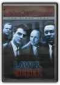

Planet Earth-complete Collection
B00AQ6Q9PI
With both impressive scope and incredible detail, PLANET EARTH explores the entire world using high definition cinematography. Boasting a budget of over $25 million, this BBC/Discovery Channel co-production exposes the beauty of the earth and its animal inhabitants from a cuddly panda cub to an attacking shark. David Attenborough narrates, as the vivid documentary takes to the sea, as well as to the mountains, caves, deserts, jungles, and more. With 40 cameramen traveling to 200 locations, this is an epic series that can't be missed. This set contains every episode: "Living Planet," "Mountains," "Fresh Water," "Caves," "Deserts," "Frozen Worlds," "The Great Plains," "Forests," "Jungles," "The Shallow Seas," "Ocean Wide, Ocean Deep," and "Planet Earth - The Future."
Star Wars Trilogy
B0001YRVN4
Disc 1: *Star Wars: A New Hope IV *Feature Film: Star Wars: A New Hope IV *Commentary by George Lucas, Ben Burtt, Dennis Muren, and Carrie FisherDisc 2: *The Empire Strikes Back V *Feature Film: The Empire Strikes Back V *Commentary by George Lucas, Irvin Kershner, Lawrence Kasdan, Ben Burtt, Dennis Muren, and Carrie Fisher
Disc 3: *Return of the Jedi VI *Feature Film: Return of the Jedi VI *Commentary by George Lucas, Lawrence Kasdan, Ben Burtt, Dennis Muren, and Carrie Fisher
Disc 4: *Bonus Disc includes the most comprehensive feature-length documentary ever produced on the Star Wars saga *Never-before-seen footage from the making of all three films, and much more

CSI: Crime Scene Investigation - The Complete First Season
Danny Cannon, Kenneth Fink, Lou Antonio, Michael Shapiro, Michael W. Watkins
B00008972G
Based on real life Las Vegas crime scene investigators, CSI: CRIME SCENE INVESTIGATION follows the team as they solve chilling cases with innovative thinking and methodical scientific inquiry. Tackling cases peppered with grisly details, the Las Vegas PD Criminalistics Division is the #2 crime lab in the U.S., solving crimes that practically every other crime lab has given up on. Set in a town whose reputation for providing instant success for those willing to try their luck, CSI finds that the constant influx of visitors to the city that never sleeps also provides ripe targets for criminals of all varieties. The show also stars Paul Guilfoyle as Capt. Jim Brass, Robert David Hall as Dr. David Robbins and Eric Szmanda as Greg Sanders.DVD Contents:
Disc 1: Pilot, Cool Change; Crate and Burial; Pledging Mr. Johnson
Disc 2: Friends and Lovers; Who Are You?; Blood Drops; Anonymous
Disc 3: Unfriendly Skies; Sex, Lies and Larvae; I-15 Murders; Fahrenheit 932
Disc 4: Boom; To Halve and to Hold; Table Stakes; Too Tough to Die
Disc 5: Face Lift; $35K O.B.O; Gentle, Gentle; Sounds of Silence
Disc 6: Justice is Served; Evaluation Day; Strip Strangler
Disk 6 of the DVD also includes the following special features:
* Featurette: "CSI: People Lie...But The Evidence Never Does"
* The Who's "Who Are You" Music Video
* Character Profiles

Law & Order: The Fourth Year
Arthur W. Forney, Constantine Makris, Dann Florek, Don Scardino, E.W. Swackhamer
B000BGR1AK
Honored with over 50 Emmy nominations since its groundbreaking first season, Law & Order continues to excel at bringing powerful stories to a devoted television audience. Now, all 22 captivating episodes of Season 4 are on DVD for the first time ever. Relive each gripping moment as New York's toughest detectives and prosecutors take on the hard-hitting cases that make the news - from blackmail to mail bombs to murder. It was during the fourth season that Emmy nominee S. Epatha Merkerson and Jill Hennessy joined New York's toughest team of prosecutors and investigators: Jerry Orbach, Chris Noth, Michael Moriarty and Steven Hill. Loaded with 43 never-before-viewed deleted and extended scenes, this dynamic three-disc set is a must-have for fans everywhere.
Law & Order: The First Year
Leslie Gaulin, Douglas Ibold, John Refoua
B00005JLFV
Arguably the most intelligently written, ingeniously plotted series in the long history of televised crime drama, Law & Order began with a bang in 1990. Part of the program's enduring appeal is its unique premise: police investigate an urban crime during the first half, and prosecutors work the resulting trial during the second half. Meet, for the first time, detective Mike Logan (Chris North), assistant district DA Ben Stone (Michael Moriarty), their colleagues, and the crooks who keep them busy. Over 17-1/4 hours on 6 DVDs.

The Wire: The Complete First Season
Clark Johnson
B0002ERXC2
From David Simon, creator and co-writer of HBO's triple Emmy-winning mini-series The Corner, this unvarnished, highly realistic HBO series follows a single sprawling drug and murder investigation in Baltimore. Told from the point of view of both the police and their targets, the series captures a universe of subterfuge and surveillance, where easy distinctions between good and evil, and crime and punishment, are challenged at every turn.
Battlestar Galactica
Michael Rymer
B00064AFBE
Forty years after the Cylon Wars, humanity's deadliest enemies have reemerged with a vengeance. In a sudden, devastating nuclear attack, the Cylon robots - who have now taken human form - wipe out billions of people. Only a handful of Colonial forces are left to shepherd the few survivors to safety. Commander William Adama (Edward James Olmos), the highest-ranking military officer left alive, reactivates the Battlestar Galactica to once again face humanity's greatest nemeses.Outnumbered and outarmed, Adama reluctantly concedes that the newly sworn-in President Laura Roslin (Mary McDonnell) is correct - this battle was lost before it had begun. With no choice but to flee, the ragtag fleet of survivors and humanity's only hope set out in search of the mythic 13th Colony of Kobol… a legendary planet known as Earth.